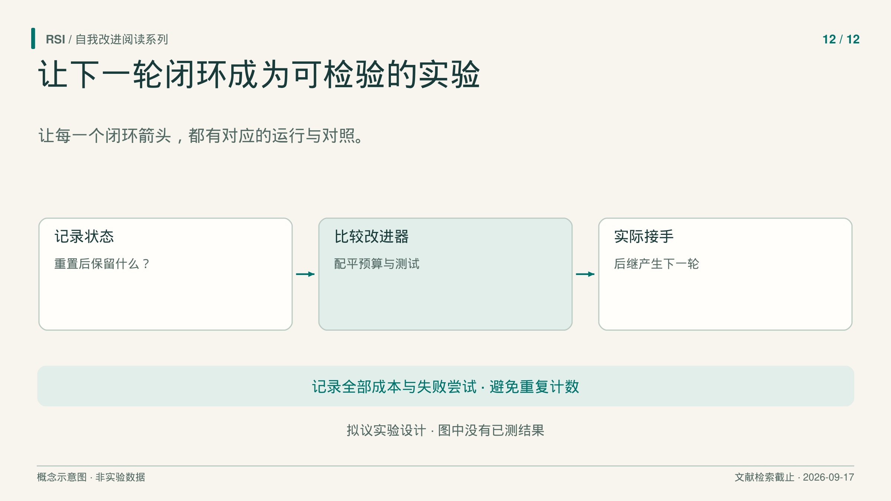
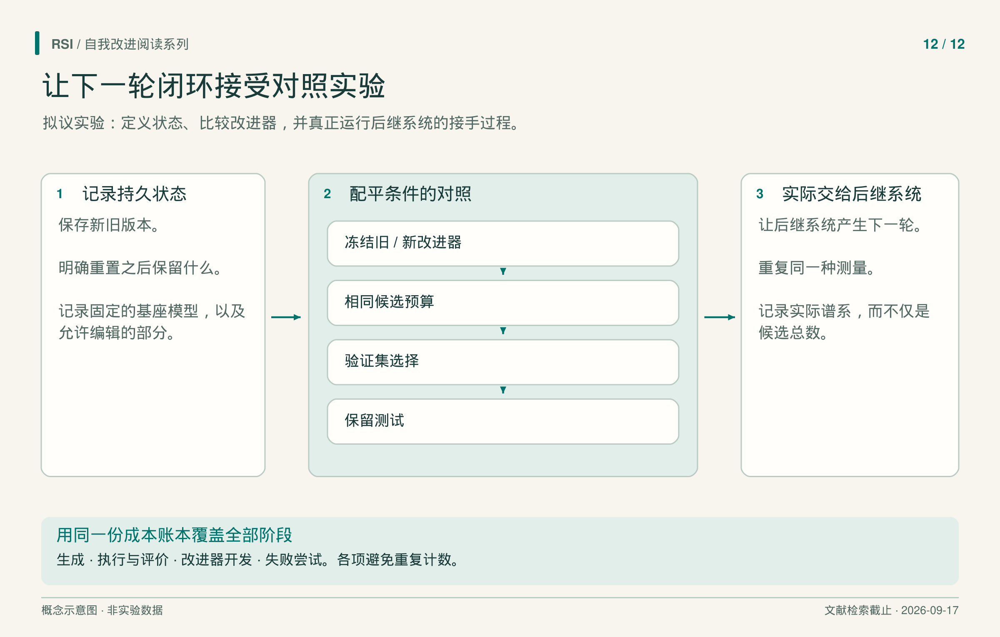

假设一个编程 agent 经过自修改后变好了。下一项实验应该辨认，变好的是解题程序、保留经验、提出修改的方法，还是单纯增加尝试次数后选出的结果。
下面提出一种拆开这些解释、再检验实际后继交接的实验。本系列没有执行它。范围有意设得具体：固定基础大模型权重，允许指定范围内的 agent 代码与改进程序变化，再在可比资源下评价这些变化带来的收益。

这是实验设计，不是已经测得的改进结果。
测量之前，先给两个程序命名
任务 agent 负责解编程题，另一个改进器读取经验，提出对任务 agent 的修改。如果系统也能修改改进器，这些编辑就形成候选后继改进器。
保存较早的改进器 I0，以及在先前任务上开发出的 I1。保存代码、提示、工具、模型身份和可访问记忆，并写明差异。如果一方还拥有更丰富的技能库或不同模型，只看文件差分就无法明确实验处理是什么。
第一阶段的问题是：给定相同起始任务 agent 和可比搜索额度，I1 能否在未参与先前开发的任务上，产生更好的最终选中 agent？这检验提出修改的过程，还没有检验无限改进序列。
Hyperagents通过改进器产生的后代来测量它。但其迁移实验同时携带任务与 meta 组件，起点分数还受到格式失败影响。因此，本设计从开始就加入组件控制。
从相同起点比较新旧改进器
比较期间冻结 I0 与 I1。两者获得相同的初始任务代码、许可工具、开发反馈机制和起始记忆。在设置允许时，配对任务实例与随机种子。改进器可以提出不同补丁，但不应获得不同的信息权限。
给两者相同候选额度，以及相同生成和执行资源上限。遇到相应上限时停止搜索，并报告实际用量。只匹配候选数，可能掩盖更长生成或更昂贵的评价；只统计成功候选，则可能让大量无效尝试的成本消失。
在主运行前确定重复次数与分析方法，进行配对重复，报告结果分布和不确定性，也记录搜索失败。单次运行的峰值，与通常能够选出的结果不是同一个统计量。
如果 I1 原先与新求解器或新记忆一起开发，再加入组件对照：固定任务 agent，只换改进器；固定改进器，只换保留状态。格式符合率与任务成功分别报告，检查收益是否跟随主张所指的组件。
重试预算尤其重要。在 Recuris 的 Terminal-Bench 2.1 任务内测试时适应中，与同样允许重试的基线比较后，能够归因于记忆适应的收益受到明显限制，报告的不确定区间包含零。这不证明效果为零，却说明只给一次尝试的基线不足以隔离多次尝试系统中的学习收益。
选择候选，与最终回答问题分开
提供验证池用于每次搜索选择候选。最终测试任务既不参与之前的改进器开发，也不参与当前选择。任务家族若共享大量结构，应说明如何在家族层面划分，不能只依赖不同问题编号。
两组使用相同选择规则。选中候选在保留测试池上评价，结果不回传搜索。保存完整候选序列，同时分开报告最后候选、验证最佳候选和最终选中候选。
RSIBench-Data给出了实际理由：最后候选低于峰值，不代表最终提交 checkpoint 回退；同一任务子集在新环境重跑，也不同于保留任务评测。本设计同时区分执行与任务暴露。

拟议谱系为 I1 → I2 → I3，每个被接受的改进器产生下一代。各阶段均计入成本，图中没有实测结果。
先决定怎样的变化可以被接受
第一项研究保持外部接受标准固定。候选可以用许可的自写测试调试，但不能靠这些测试批准自己晋升。候选与当前保留系统通过同一外部程序比较，容差及拒绝方式预先确定。
拒绝策略与测试的联合修改时，恢复联合状态。Guo SEAL提供了这种设计的具体例子，也展示其限制：审计接受的改善仍可能对应部署表现下降。因此，本设计的接受门也需要分析误判，不能当作部署保证。
若评价输入、评分或执行出现未预期变化，应暂停接受，直到能重建有效比较。事件及成本都作为结果记录。如果后来要研究评价器演化，应另设带稳定参照的协议，不能悄悄延续旧分数曲线。
让后继系统真正做下一轮
冻结对照之后，让 I1 访问许可修改的自身实现，以及预先声明的开发与验证信息。在预定且计费的预算内，由 I1 提出编辑，产生具名后继改进器 I2。
冻结 I1 与 I2，在预留验证任务上，以相同资源做同样的后代生成对照，比较开销也计入搜索预算。固定外部门只用开发与验证依据决定晋升。封闭的最终测试仅用于报告，不决定接受，也不进入后续开发；外部门本身不在可修改状态中。
接受之后，激活 I2，再由 I2 自己按同样规则提出 I3。记录父代、实际编辑、后代及决定，也保留被拒绝提议。I1 → I2 → I3 仍是本系列尚未执行的设计，重复使用不变的 I1 不会实现这条谱系。
HELIX说明了边界的重要性：所读论文已经物化模型更新数据，却没有训练更新后的模型。提出更新步骤与执行更新，需要不同报告。
为后续受控测量预留任务池，预先确定最大交接次数与资源限制，使停止决定不依赖能否画出漂亮的测试曲线。
把产生结果的工作也算进去
记录候选生成、执行、验证、最终测量、改进器开发和失败尝试。成本类别应互不重叠，避免生成开销已经记录，又因该候选失败而重复计费。模型调用、token、算力、费用和墙钟时间各自报告，不把它们视为可互换单位。
Dream-RSI给出一个边界：discovery agent 调用数不包含 dreaming、策略开发和执行的全部费用。最终求解器更便宜，发现它的过程仍可能很贵。
达到预设资源上限、搜索额度内找不到可接受后继，或评价完整性问题阻止有效比较时停止。保留当前版本并报告原因，不能通过不断重启直到成功来隐藏这些结果。
若 I1 在可比资源下胜出，实际的 I1 → I2 → I3 谱系在同样控制下带来后续收益，结果支持的是这些已测试联系，仍不足以建立持续加速或无关能力的改善。若收益在组件或重试控制后消失，同样有信息：实验找到了原先增益依赖的条件。
参考来源
- Zhang 等，《Hyperagents》，v1，2026。
- Yu 等，《Recursive Experiential-Working Memory Evolution for Long-Horizon Agent Harnesses》，v1，2026。
- Meng 等，《RSIBench-Data》，v1，2026。
- Guo 等，《Self-Authored Verification Is Unreliable in Heuristic Self-Improving Agents》，v1，2026。
- Fan 等，《HELIX》，v1，2026。
- Zheng 等，《Dream-RSI》，v1，2026。
本设计基于文献纳入截至 2026 年 9 月 17 日的书稿提出，尚未执行，也没有声称具体样本量、结果或成功率。